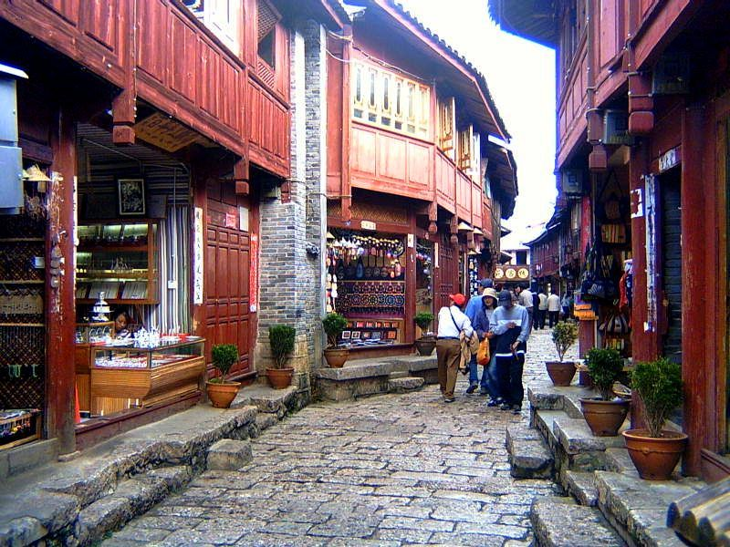

As part of our trip to China we had a cultural exchange with college students in Kunming. Even though they were a few years older than us, they seemed to be on the same level of maturity as us high school students. I remember thinking that this was odd, but in China I guess it is much more common to live with your parents and still be more of a 'child' during college. We spent the days with the students exploring the city, teaching them the Macarena, buying pirated DVDs, and having fun. We stayed at a hotel close to the college. Every morning in front of the hotel there was a street food vendor that would wheel his cart up and sell steamed buns. They were filled with a sweet jam or savory pork. I think that I ate them everyday for breakfast that we were there. There was a street that was filled with street food vendors, all the variety and unique foods were fun to look at and try.
We also visited Lijiang, a city with a UNESCO heritage site historic old town that is around 1,000 years old. It is full of small shops selling everything from traditional Chinese medicine to calligraphy and art. We had a lot of fun running around, buying things, and eating at the small expat run European style restaurant there. In another part of town there was a larger market. We wanted to combine our purchasing power and buy a large quantity of one item that we could take home as souvenours. Everyone decided that they liked the red lamps that were all around the old town, so Dan and I went to the market to find someone who could sell us them in bulk. This larger market was also quite diverse and had a big meat market. There were live animals in cages, including dogs. There were also butchered dogs, I remember seeing one whole dog that had been dried laying out on a table to buy for your next family dinner. It was interesting, to say the least. Anyways, Dan and I went and found a guy with a stall full of these lamps and arranged to buy a large quantity of them. While we were waiting around with the shop keeper for them to be delivered he decided that it was a good time for a smoke break. As a courtesy he offered a cigarette to Dan, and when he refused, he offered one to me. I was around 14 at the time. It was a good first hand learning experience that taught me that cultures' norms differ wildly. We were also offered fruit liquor at the end of a very nice dinner that we were invited to by the local governor/government official. At first we didn't know what it was and everyone, even the 12 year old kids, had a small cup, since it was offered to everyone and we didn't want to be rude. This was just another eye opening experience that I had with my time at HOLA that taught me the value of getting outside yourself, your culture, and your country.
On our way out of China we stayed at a high rise hotel in Hong Kong. We were under the assumption that 'high-rise' meant fancy. We were wrong, high rise meant, literally, high rise. It was up on the 15th or 20th story of this old building. The elevator was super sketchy; if more than 4 or 5 people got in it it had a tendency to get stuck if you were unlucky, and refuse to move if you were lucky. We only stayed a night or two there, but it was fun nonetheless. There was such a diversity of ethnicities, languages, food, and culture in Hong Kong that it was fun to just go people watch on the street.